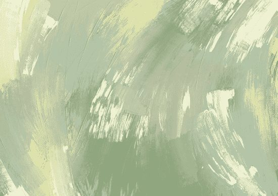
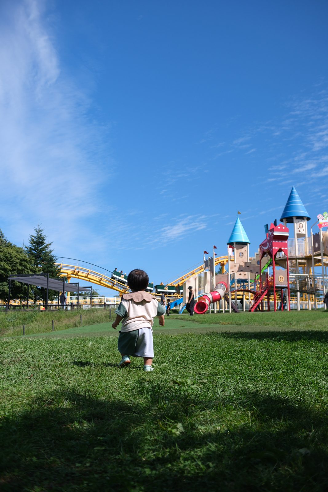

文化と美Culture & Beauty
俳句，いけばな，舞楽，書道。日本の芸術を手がかりに，美しさの感じ方が文化によってどう違うのかを，日本とドイツで比べています。Haiku, ikebana, bugaku, and calligraphy. Through the Japanese arts, I compare how people in Japan and Germany feel beauty.
小さい頃から，いろいろな物事に感動してきました。その感動や，美しいと感じる体験には大きな力が秘められているのではないか。そう考えて，研究の世界に入りました。
いまはドイツのハンブルクで，美しさを感じるこころを，俳句や日本の芸術を手がかりに研究しています。
I have been moved by many things since I was a child. Wondering whether being moved and feeling beauty hold a quiet power, I entered the world of research.
Now in Hamburg, Germany, I study how we feel beauty, through haiku and the Japanese arts.
俳句，いけばな，舞楽，書道。日本の芸術を手がかりに，美しさの感じ方が文化によってどう違うのかを，日本とドイツで比べています。Haiku, ikebana, bugaku, and calligraphy. Through the Japanese arts, I compare how people in Japan and Germany feel beauty.

白黒つかないものに，人はどう向き合うのか。「曖昧さへの態度」を測る尺度づくりから，俳句による変化，脳のつながり，AI への態度まで調べています。How do we face what cannot be settled? I study attitudes toward ambiguity, from building scales to change through haiku, brain connectivity, and attitudes toward AI.

サウナ，宗教，ボードゲーム，投資。日々の営みのなかで揺れるこころにも目を向けています。Sauna, religion, board games, and investing. I also look at how the mind moves through everyday life.
日本的感性の心理学The Psychology of Japanese Aesthetic Sensibilitynote MAGAZINE
「美しい」はどこまで人類共通で，どこからが文化の違いなのか。わびさび，余白，非対称性など，日本的な美意識を心理学や脳科学の手でほぐしていきます。いつか書きたい本に向けて，断片を書き溜めています。書籍化のご相談もお気軽にどうぞ。
How much of our sense of beauty is shared by all humans, and where do cultures differ? I unpack Japanese aesthetics such as wabi-sabi, empty space, and asymmetry with psychology and neuroscience, collecting pieces toward a future book. Editors are warmly welcome to get in touch.
マガジンを読むREAD THE MAGAZINE芸術と感性を研究する心理学者のくらしLife of a Psychologist Studying Art and Sensibilitynote MAGAZINE
今研究していること，研究したいこと，悩んでいること，将来のこと，などを赤裸々に書いていきます。
What I am researching now, what I want to research, what I am struggling with, and what lies ahead, written candidly.
マガジンを読むREAD THE MAGAZINEBoth magazines are written in Japanese.
募集中Open now
クラウドファンディング「曖昧さを味わう」対話と寛容の社会をつくりたい（10月29日まで）Crowdfunding: “Savoring ambiguity: Toward a society of dialogue and tolerance” (until 29 October)
ペンシルベニア大学 Penn Center for Neuroaesthetics で招待講演Invited talk at the Penn Center for Neuroaesthetics, University of Pennsylvania
神戸大学の国際シンポジウムで講演「いけばなから文化的経験美学へ」Talk “From ikebana to a cultural empirical aesthetics” at Kobe University
日本心理学会第90回大会で公募シンポジウム「混合感情の心理学」を企画・司会Organized and chaired a symposium on mixed emotions at the 90th Annual Convention of the Japanese Psychological Association